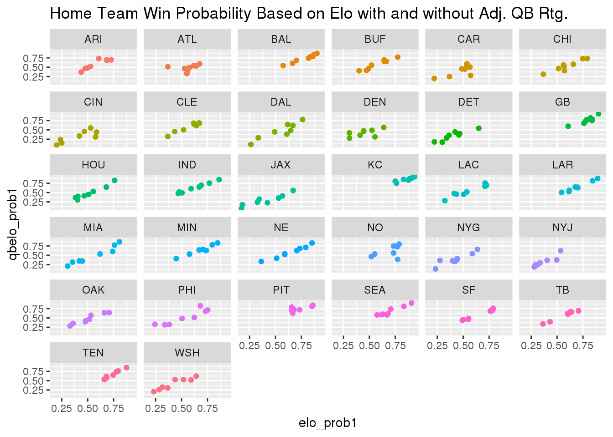

library(tidyverse)
dat_nfl <- read_csv("nfl_elo_latest.csv")The NFL Elo dataset contains 256 observations of 30 variables. The data was collected by downloading nfl_elo_latest.csv from the FiveThirtyEight Github page. Altogether, the data comprised in this file details the game-by-game Elo ratings and forecasts for the latest NFL regular season up until Jan 3, 2021. There are many factors that go into these predictive metrics, however the more important ones refer to the QB play on a given team. A few questions that I’m going to answer with the data are as follows: is there a significant gap in a team’s win probability when including the adjusted QB rating? Which teams have the biggest differential in this split? Additionally, has there been a steady increase of points scored throughout the regular season? If so, what might be the reasoning behind that? All these questions should help us to understand the true value of the QB in today’s NFL as well as where the game is headed as far as scoring is concerned.
Is there a significant gap in a team’s win probability with the inclusion of adjusted QB rating? To test this question, we visualize the data in the form of scatterplots where each team is assigned their own graph. To avoid redundancy, I will only focus on the home team for every game. The reason being home and away splits this season don’t vary as much due to fans not being in attendance for most games.
library(tidyverse)
elo_variables_1 <- c("team1", "elo_prob1", "qbelo_prob1")
win_prob_team_1 <- dat_nfl[elo_variables_1] %>% na.omit()
home_team_plot <- ggplot(data = win_prob_team_1, aes(x = elo_prob1, y = qbelo_prob1, color = team1)) + geom_point() + facet_wrap(~ team1) + ggtitle("Home Team Win Probability Based on Elo with and without Adj. QB Rtg.") + theme(legend.position = "none")
home_team_plot
The data visualizations above seek to establish a correlation between a team’s win probability based solely on elo ratings and a team’s win probability based on elo ratings adjusted for the QB. Across the board, a positive relationship exists among these two variables. Furthermore, this indicates that if a team is starting a competent QB on a weekly basis, a majority of the points on their respective graph will sit in the mid to upper-right quartile. We notice, however, that some data points for teams do not fall in this range. That leads us into our anaylsis for the following question.
Next, we will perform some calculations on summary statistics from this data to determine which teams in the NFL have the greatest disparity in win probability when adjusted for QB rating.
avg_elo_diff <- win_prob_team_1 %>% mutate(elo_diff = elo_prob1 - qbelo_prob1) %>% group_by(team1) %>% summarize(mean_elo_prob_diff = mean(elo_diff))
avg_elo_diff %>% filter(mean_elo_prob_diff > 0.08)## # A tibble: 5 x 2
## team1 mean_elo_prob_diff
## <chr> <dbl>
## 1 ATL 0.0824
## 2 CIN 0.0870
## 3 DAL 0.0805
## 4 JAX 0.107
## 5 NO 0.0829med_elo_diff <- win_prob_team_1 %>% mutate(elo_diff = elo_prob1 - qbelo_prob1) %>% group_by(team1) %>% summarize(median_elo_prob_diff = median(elo_diff))
med_elo_diff %>% filter(median_elo_prob_diff > 0.07)## # A tibble: 5 x 2
## team1 median_elo_prob_diff
## <chr> <dbl>
## 1 ATL 0.0855
## 2 CIN 0.0944
## 3 JAX 0.109
## 4 MIA 0.0783
## 5 TEN 0.0823std_elo_diff <- win_prob_team_1 %>% mutate(elo_diff = elo_prob1 - qbelo_prob1) %>% group_by(team1) %>% summarize(sd_elo_prob_diff = sd(elo_diff))
std_elo_diff %>% filter(sd_elo_prob_diff > 0.09)## # A tibble: 5 x 2
## team1 sd_elo_prob_diff
## <chr> <dbl>
## 1 ATL 0.105
## 2 CAR 0.105
## 3 CIN 0.0936
## 4 DEN 0.102
## 5 NO 0.135After calculating the mean, median, and standard deviations of win probability differential for all 32 teams, the 5 teams with the biggest margins were filtered out in each category. The Atlanta Falcons and Cincinnati Bengals appear in the top 5 in all three statistical categories, likely meaning their starting QB (Matt Ryan and Joe Burrow) has hurt their chances of winning a game this season more often than not. Now to be fair to the Bengals, Joe Burrow was injured a few weeks back and they’ve been playing with backups for the remainder of the season. That would obviously have something to do with their name coming up on multiple occasions. The biggest surprise in these top 5 breakdowns, though, is the New Orleans Saints. With a record of 10-2, they are a high caliber team in the NFL. Yet when looking at their QB situation throughout the season, it has been a bit unexpected. The Saints lost their original starting QB in Drew Brees, a future Hall-of-Famer, and replaced him with a guy who has not played necessarily worse than him but who is more volatile on a week to week basis. That may explain why the Saints are at the top of the lists in average win probabibilty differential and in standard deviation of win probability differential.